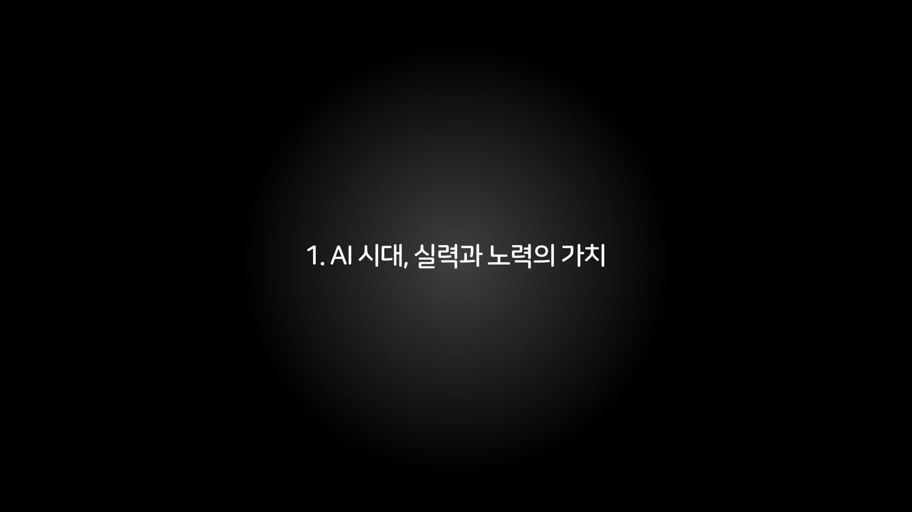

AIGC 시장 트렌드 및 창작자 패러다임의 변화
2025년 11월 21일 발표 자료 전문. 슬라이드 162장과 현장에서 재생한 영상 55편을 그날의 순서 그대로 옮겼다.
영상은 발표 중 슬라이드 위에서 재생된 것이다. 그 자리에 그대로 두었으니, 누르면 그날 화면에 흐른 것이 지금 흐른다. 영상만 있는 장표는 원본이 검은 화면이라 슬라이드 대신 영상을 놓았다.

CHAPTER 01 · 슬라이드 2–22
AI 시대, 실력과 노력의 가치
발표 전체의 철학적 기반을 마련합니다. "AI가 무엇이든 만들어내는 시대에, 인간의 실력과 노력은 여전히 가치가 있는가?"라는 근본적 질문을 던지고, 이 질문에 대한 답을 찾아가는 여정이 바로 이후 5개 챕터의 구조임을 암시합니다.

Freepik 사례 — "무엇이든 생성 가능한 시대?"
- 슬라이드 3: 스톡 이미지 플랫폼 Freepik이 자사 저작권 확보된 스톡 이미지로 AI 모델을 학습시켜 자체 이미지 생성 기능(All-in-One AI Creative Suite)을 제공하는 사례를 소개합니다. "과거 '디지털 이미지'를 진열하던 것에서, 이제는 다양한 'AI 기반 창작 도구'를 진열하는 것으로 변화"했다고 설명합니다. 좌측에 Freepik 화면 이미지 + 우측에 Freepik 영상(Media 셰이프)이 배치되어 텍스트 설명과 시각적 증거를 동시에 제공합니다.
- 슬라이드 4~5: Freepik의 다양한 AI 도구 화면을 이미지로 나열하며, 하나의 플랫폼이 이미지 생성, 편집, 변환 등 전체 창작 파이프라인을 AI로 통합했음을 시각적으로 보여줍니다.
슬라이드 003영상
슬라이드 004
슬라이드 005
철학적 전환점 — "AI 시대, 창작의 정의를 다시 묻다"
- 부제: "창작 주체에 대한 오랜 전제의 균열"
- 본문은 세 가지 핵심 논점을 전개합니다:
- 이 슬라이드에서는 키워드("진정성", "창작 주체의 경계" 등)가 Rectangle 도형으로 강조 표시되어, 핵심 개념의 시각적 강조가 이루어집니다.
슬라이드 006
"예술가는 대체되는가, 아니면 확장되는가?" — 미술 분야
- 좌우 2분할 레이아웃으로 두 개의 사례를 대비 배치합니다:
- 두 사례 모두 "AI가 미술 분야에서 이미 인간과 경쟁하고 있다"는 현실을 증명하되, 동시에 "인간이 AI를 '도구'로 사용하여 만든 작품"이라는 점에서 '대체'보다 '확장'의 가능성을 암시합니다.
슬라이드 007
"창작자는 대체되는가, 아니면 확장되는가?" — 음악 분야
- 세계 최초로 음악 레이블과 계약한 'AI 음악 디자이너' ImOliver 사례를 소개합니다.
- 좌측에 ImOliver 관련 이미지들, 우측에 상세 텍스트가 배치됩니다.
- 핵심 논점:
슬라이드 008
시각적 전환
- 슬라이드 9: 전면 이미지(텍스트 없음). 앞선 논의의 시각적 여운을 남기는 전환 슬라이드
- 슬라이드 10: 그룹 도형. 개념 다이어그램이나 인포그래픽으로 추정
슬라이드 009
슬라이드 010
"셀럽은 대체되는가, 아니면 확장되는가?" — 엔터테인먼트 분야
- 슬라이드 11: SM엔터테인먼트의 버추얼 아티스트 나이비스(nævis) 사례
- 슬라이드 12: 나이비스의 'Sensitive' MV 영상 전면 재생 슬라이드 (7.73MB mp4 파일 삽입)
슬라이드 011
슬라이드 012영상
위협의 양면 — 정체성 도용과 생태계 붕괴
- 슬라이드 13: "전문가로서의 정체성 위협"
- 슬라이드 14: "기존의 경제적 기반 붕괴"
슬라이드 013
슬라이드 014
Suno — AI 음악 생성 플랫폼
- 슬라이드 15~16: Suno 플랫폼의 인터페이스 이미지 (탐색 화면, 스튜디오 화면)
- 슬라이드 17: Suno 관련 영상 재생 (텍스트 없음)
- 이 세 슬라이드는 "누구나 음악을 만들 수 있는 시대"의 구체적 증거를 보여줍니다.
슬라이드 015
슬라이드 016
슬라이드 017영상
"'노력의 가치'에 대한 딜레마" — 맥도널드 광고 사례
- 슬라이드 18: 맥도널드 광고 "Take a Trip Through McDonaldland" 영상 + 유튜브 URL
- 슬라이드 19: 해당 광고의 제작자가 "이것은 AI가 아닌 수백 명 아티스트의 수개월 노력이 담긴 실사 촬영물"이라고 해명한 사례
- 슬라이드 20: Making-of 영상 재생
- 슬라이드 21: 정리 — "이제 창작자들은 어떤 판단과 노력을 통해 자신의 작품 안에 진정성을 담아냈는지를 설득해야 하는 새로운 과제를 떠안게 됨. 그런데 만약 '진정성'이라는 가치마저 AI에 의해 시뮬레이션될 수 있다면?"
슬라이드 018
슬라이드 019
슬라이드 020영상
슬라이드 021
챕터 1 종합 정리 — "AI 기술의 등장에 따른 새로운 창작자 패러다임"
- 5가지 패러다임 변화를 구조화:
슬라이드 022
CHAPTER 02 · 슬라이드 23–62
도구를 넘어 새로운 미디어로
1장에서 제기한 "AI는 도구인가?"라는 질문에 대해, "AI는 도구가 아니라 완전히 새로운 매체(미디어)이다"라는 본 발표의 핵심 테제를 제시합니다. 가장 많은 슬라이드(40장)를 할애한 챕터로, 다양한 분야의 사례를 총동원하여 이 주장을 뒷받침합니다.

Showrunner — AI TV 쇼 플랫폼
- 슬라이드 24: Showrunner 플랫폼 영상 전면 재생
- 슬라이드 25~28: Showrunner의 Generative TV Show Platform 인터페이스와 생성 결과물 이미지
- 슬라이드 29: 두 인물의 비전을 대비 배치
- 핵심 메시지: AI 영상 생성이 단순한 "영상 편집 도구"가 아니라 "TV 쇼라는 완전한 매체"를 생성할 수 있는 수준에 도달했음
슬라이드 024영상
슬라이드 025
슬라이드 026
슬라이드 027
슬라이드 028
슬라이드 029
AI 기반 인터랙티브 콘텐츠
- 슬라이드 30~31: Hypernatural — AI 기반 상호작용 콘텐츠 플랫폼
- 슬라이드 32~34: AI 기반 셜록 홈즈 컨텐츠 — 기존 IP를 AI로 재해석한 인터랙티브 경험
- 슬라이드 35: Beam — Phaser Studio에서 개발한 AI 기반 게임 생성 플랫폼
슬라이드 030
슬라이드 031
슬라이드 032영상
슬라이드 033
슬라이드 034영상
슬라이드 035영상
이론적 근거 — "AI는 '완전히 새로운 미디어'다"
- 슬라이드 36: Runway CEO Cristóbal Valenzuela의 글 < A New Medium > 인용
- 슬라이드 37: 위 인용을 반복하며, 정리 텍스트 추가
- 슬라이드 38: AI 매체의 고유한 문법 설명
슬라이드 036
슬라이드 037
슬라이드 038
AI 매체로서의 구체적 현상들
- 슬라이드 39~45: Sora와 공동 창작 문화
- 슬라이드 46~49: 인기 IP 기반 2차 창작 문화와 갈등
- 슬라이드 50: 디즈니의 포용적 접근 — 밥 아이거 CEO 인터뷰
슬라이드 039
슬라이드 040
슬라이드 041
슬라이드 042
슬라이드 043영상
슬라이드 044
슬라이드 045영상
슬라이드 046영상
슬라이드 047영상
슬라이드 048
슬라이드 049
슬라이드 050
AI 콘텐츠와의 정서적 교감
- 슬라이드 51~52: Character.ai, Talkie-ai — AI 캐릭터와의 대화형 교감 플랫폼
- 슬라이드 53~55: 관련 이미지 사례들
- 슬라이드 56: ChatGPT Group Chats — AI가 다자간 대화에 참여하는 기능
- 슬라이드 57~60: Grok AI Companions (grok.com/mika) — xAI의 AI 컴패니언 서비스. 영상 시연 포함
- 슬라이드 61: 관련 이미지
- 슬라이드 62: Tavus — 감정 이해와 멀티모달 인식 기반 AI 소통 플랫폼
슬라이드 051
슬라이드 052
슬라이드 053
슬라이드 054
슬라이드 055
슬라이드 056
슬라이드 057
슬라이드 058
슬라이드 059영상
슬라이드 060영상
슬라이드 061
슬라이드 062
CHAPTER 03 · 슬라이드 63–84
AI와의 상호작용을 위한 프롬프트
AI라는 새로운 매체를 다루기 위해 필요한 핵심 역량 — "프롬프트 엔지니어링" 능력 — 을 정의하고, 이를 통해 AI 시대의 새로운 창작 프로세스 모델을 제시합니다.

아이데이션 영상 및 이미지
- 슬라이드 64: "아이데이션" 영상 전면 재생 — AI를 활용한 아이디어 구상 과정 시연
- 슬라이드 65: 관련 이미지
슬라이드 064영상
슬라이드 065
"새롭게 요구되는 프롬프트 엔지니어링 능력"
- 핵심 정의:
슬라이드 066
프롬프트 → 시각적 결과의 실제 사례들
- 슬라이드 67: Gemini Nano Banana — 매우 상세한 프롬프트(모델 포즈, 핑크 BMW, 그린 에일리언 키체인 등 세부 묘사)가 어떤 이미지를 생성하는지 실제 프롬프트 텍스트와 함께 제시
- 슬라이드 68~69: Nano Banana + Veo — Google의 AI 도구 조합으로 이미지를 영상으로 변환하는 과정. 일관성(consistency) 유지 시연 영상 포함
- 슬라이드 70~72: Google Flow + Veo — Google의 AI 영상 제작 워크플로우 플랫폼(labs.google/flow) 인터페이스와 결과물
- 슬라이드 73: Flow 워크플로우 영상 전면 재생
슬라이드 067
슬라이드 068영상
슬라이드 069영상
슬라이드 070
슬라이드 071
슬라이드 072
슬라이드 073영상
AI 영화 제작 사례 — Dave Clark
- 슬라이드 74: "My Very First Sora 2 Short Film" by Dave Clark
- 슬라이드 75, 77: AI 영화 영상 전면 재생
- 슬라이드 76: 영화의 장면 스틸컷 이미지
- 슬라이드 78: 추가 AI 영상 사례
슬라이드 074
슬라이드 075
슬라이드 076
슬라이드 077영상
슬라이드 078영상
핵심 프레임워크 — "제작과 평가의 경계를 넘나드는 비선형 과정"
- 1단계. 구상 및 지시 — 인간이 창의적 목표와 방향성을 설정
- 2단계. 생성 및 탐색 루프 — 본격적인 창작 협업, 인간과 AI가 상호작용을 반복
- 3단계. 통합 및 완성 — 재료를 확보, 인간이 결과물을 완성
- 슬라이드 80~81은 같은 프레임워크에 핵심 결론을 추가:
슬라이드 079
슬라이드 080
슬라이드 081
AI의 창의성에 대한 학술적 논의
- 슬라이드 82: 두 학자의 관점 대비
- 슬라이드 83: '조합적 창의성'에서 '자율적 창의성'으로의 진화
- 슬라이드 84: 최종 정리
슬라이드 082
슬라이드 083
슬라이드 084
CHAPTER 04 · 슬라이드 85–104
프롬프트를 넘어 실시간 워크플로우로
3장에서 정의한 프롬프트 능력을 넘어, AI가 도구 → 동료 → 공동창작자로 진화하는 과정과, 이에 따른 실시간 통합 워크플로우의 구축 방법론을 제시합니다.

Flora AI 워크플로우
- 슬라이드 86~89: Flora AI(florafauna.ai)의 통합 워크플로우 인터페이스 이미지들
- 슬라이드 90: Flora AI 워크플로우 영상 전면 재생
- 핵심: AI 도구가 개별 기능을 넘어 전체 창작 과정을 하나의 워크플로우로 통합하는 단계에 진입
슬라이드 086
슬라이드 087
슬라이드 088
슬라이드 089
슬라이드 090영상
AI의 역할 진화: 도구 → 동료 → 공동창작자
- 슬라이드 91: "'도구'를 넘어 '동료'가 된 AI" — 3가지 차원
- 슬라이드 92: "'동료'를 넘어 '공동창작자'로서의 AI"
슬라이드 091
슬라이드 092
통합 워크플로우의 구체적 구축
- 슬라이드 93: "'공동 창작자 AI'와의 통합 워크플로우 구축"
- 슬라이드 94: MV 제작 사례의 3단계 워크플로우
슬라이드 093
슬라이드 094
실제 데모 시연
- 슬라이드 95: OpenCreator 영상 전면 재생 — AI MV 제작 데모
- 슬라이드 96: OpenCreator - Making AI MV Demo (youtu.be 링크 포함)
- 슬라이드 97, 100~101: 추가 영상 시연들 (텍스트 없이 전면 미디어)
- 슬라이드 98~99: 결과물 이미지
슬라이드 095영상
슬라이드 096
슬라이드 097영상
슬라이드 098
슬라이드 099
슬라이드 100영상
슬라이드 101영상
새로운 양극화 경고
- 슬라이드 102: "AI 시대가 마주하게 될 새로운 양극화"
- 슬라이드 103~104: 관련 시각 자료 (이미지만, 텍스트 없음)
슬라이드 102
슬라이드 103
슬라이드 104
CHAPTER 05 · 슬라이드 105–126
온라인 창작 커뮤니티와 플랫폼
개인의 역량(3~4장)을 넘어, AI 창작이 형성하는 집단적 생태계 — 커뮤니티, 플랫폼, 개발사-창작자 관계, 데이터 주권 — 을 조망합니다.

미드저니(Midjourney) 생태계 심층 분석
- 슬라이드 106: "온라인 창작 커뮤니티와 플랫폼" 총론
- 슬라이드 107: 미드저니 커뮤니티 영상 전면 재생
- 슬라이드 108: 미드저니의 스타일 레퍼런스(-sref) 기능 — 특정 스타일 코드를 프롬프트에 부여하여 일관된 미적 기준을 유지하는 기능. 실제 프롬프트 텍스트 공개
- 슬라이드 109: "-sref 기능은 AI 기반 이미지 생성 도구 '미드저니'의 성장을 잘 보여주는 사례"라는 해석 텍스트와 함께 영상 시연
- 슬라이드 110: 스타일 레퍼런스 적용 결과물 이미지 비교
- 슬라이드 111: 미드저니 매거진 — 미드저니가 자체 발행하는 디지털 매거진
- 슬라이드 112: 미드저니 유저 프로필 — 사용자들이 자신의 생성 작품을 프로필로 관리하는 기능
슬라이드 106
슬라이드 107영상
슬라이드 108
슬라이드 109영상
슬라이드 110
슬라이드 111
슬라이드 112
AI 개발사와 창작자 커뮤니티의 협력
- 슬라이드 113: 총론 — "AI 개발사들은 창작자 커뮤니티를 기술 생태계를 함께 성장시키는 핵심 파트너로 인식"
- 슬라이드 114: OpenAI Sora Artist Program (artnet.com 기사 출처)
- 슬라이드 115: OpenAI Creative Lab — "첫 번째 랩이 오늘 서울에서 시작되며, 21명의 아티스트가 한 달 동안 도구로 함께 새로운 프로젝트를 제작합니다. 아티스트가 주도하고 도구가 따라갈 때, 새로운 형태가 탄생하기 때문입니다."
- 슬라이드 116: Runway 관련 영상 (런웨이 알레프)
- 슬라이드 117: Runway GenAleph Edition — AI 영화제 형태의 집단 창작 프로젝트
- 슬라이드 118: Runway 알레프 영상 전면 재생
- 슬라이드 119~120: Runway Aleph / Act-Two — "AI 개발사들은 창작자 커뮤니티의 필요를 파악하여 그것을 빠르게 제공하고 실험"
- 슬라이드 121~122: Runway Apps — 창작자가 직접 AI 앱을 만들 수 있는 기능. 배경 변경(Change Background) 영상 시연 포함
슬라이드 113
슬라이드 114
슬라이드 115
슬라이드 116영상
슬라이드 117
슬라이드 118영상
슬라이드 119영상
슬라이드 120
슬라이드 121
슬라이드 122영상
"AI 학습 데이터와 창작자의 새로운 권리, '데이터 주권'"
- 4가지 논점 구조화:
슬라이드 123
"AI 기반 2차 창작 문화의 확산"
- 3가지 논점:
슬라이드 124
Google SynthID — AI 콘텐츠의 신뢰도 확보
- "AI 콘텐츠의 신뢰도를 확보하기 위해 AI 이미지에 삽입되는 구글의 디지털 워터마크 솔루션"
- "이는 AI 창작물의 진본성과 맥락을 증명하는 핵심 장치가 될 것"
- 슬라이드 125에 SynthID 영상 시연 포함
슬라이드 125영상
슬라이드 126
CHAPTER 06 · 슬라이드 127–154
AI로 무한히 확장되는 디지털 가상 세계
발표의 클라이맥스. AI가 콘텐츠를 만드는 것을 넘어, 세계 자체를 만드는 단계로 진입하는 미래 비전을 제시합니다. 월드 모델 → 월드 스킨 → 월드 엔진이라는 3단계 진화 로드맵으로 마무리합니다.

현실 세계 기억과 서사의 변형
- 슬라이드 128: "현실에서 실제로 이런 일이 일어나지 않았는데, 영상으로 생성되면 새로운 세계관을 덮어쓰는 듯한 묘한 느낌을 받는다. 기억의 트리거로서 기록이 생성되면 기존의 모호했던 기억은 쉽게 덮어 쓰여진다." — AI가 만든 허구적 영상이 인간의 실제 기억을 어떻게 변형시킬 수 있는지에 대한 통찰. 관련 영상(Media) 포함
- 슬라이드 129~130: 툴파맨서(Tulpamancer) — Matthew Niederhauser, Marc Da Costa의 2023년 VR 작품
- 슬라이드 131~134: Ancestra — Eliza McNitt 감독 작품
슬라이드 128영상
슬라이드 129영상
슬라이드 130
슬라이드 131영상
슬라이드 132
슬라이드 133영상
슬라이드 134영상
디지털 세계의 새로운 물리 법칙
- 슬라이드 135: 개념 정리
- 슬라이드 136~137: NVIDIA RTX Remix — 2D 텍스쳐 생성 / 3D 모델 생성 / 리마스터링
- 슬라이드 138: 업스케일링 영상 시연
- 슬라이드 139: Kling 영상 시연
- 슬라이드 140: Veed AI Transitions — "두 장의 이미지를 입력하면, 현실 물리 법칙에 기반해 개연성을 가진 상황들이 창조됨"
- 슬라이드 141: "디지털 세계의 시공간적 경계 확장"
- 슬라이드 142~143: 반 고흐 등 명화 관련 AI 변환 시연 (무한 줌 등)
슬라이드 135
슬라이드 136
슬라이드 137
슬라이드 138영상
슬라이드 139영상
슬라이드 140영상
슬라이드 141
슬라이드 142
슬라이드 143영상
"현실 세계 추론(Real-world reasoning)"
- Gemini 2.5 Flash Image Generation 사례
슬라이드 144
월드 모델(World Model)
- 슬라이드 145: "현실을 이해하는 무한의 가상 캔버스 – 월드 모델"
- 슬라이드 146: Runway Game Worlds — "텍스트로 스토리를 쓰면 게임 세계를 실시간 생성. 별도 프로그래밍 없이 AI가 즉석에서 세계와 이야기, 캐릭터를 만들어주는 새로운 창작 방식"
- 슬라이드 147: Genie 3 영상 전면 재생
- 슬라이드 148: Google Deepmind Genie 3 — "텍스트 프롬프트만으로 다양하고 상호작용 가능한 3D 가상 세계를 실시간 생성하는 범용 월드 모델. AI가 코딩이나 모델링 없이 물리 현상을 표현하고, 과거 상호작용을 기억해 세계의 일관성을 유지하며 실시간 영상을 생성"
- 슬라이드 149: "월드 모델 이후, 창작 패러다임의 변화"
- 슬라이드 150: 관련 영상 전면 재생
- 슬라이드 151: Google Deepmind SIMA2 — "제미나이를 기반으로 가상 환경을 이해하고 스스로 추론하며 행동 계획을 수립하는 범용 AI 에이전트. 'Genie 3'와 결합한 'AI 속 AI' 구조를 통해, 가상 세계에서 행동 결과를 미리 시뮬레이션하고 학습 데이터로 활용"
- 슬라이드 152: World Skins — AI 기반 이미지/오디오 실시간 생성
슬라이드 145
슬라이드 146영상
슬라이드 147영상
슬라이드 148영상
슬라이드 149영상
슬라이드 150
슬라이드 151영상
슬라이드 152영상
월드 스킨과 월드 엔진 — 최종 비전
- 슬라이드 153: "현실 위에 그려지는 월드 스킨"
- 슬라이드 154: "월드 모델, 월드 스킨 넘어 '월드 엔진'으로" — 발표 전체의 최종 비전
슬라이드 153
슬라이드 154
APPENDIX · 슬라이드 155–162
마무리 및 부록
슬라이드
- 슬라이드 155: Q&A 슬라이드 —
- 슬라이드 156~162: 부록 — 추가 참고 영상 및 이미지 자료들 (Sora 프롬프트 예시, AI 생성 이미지 등)
슬라이드 155
슬라이드 156
슬라이드 157
슬라이드 158
슬라이드 159
슬라이드 160
슬라이드 161
슬라이드 162